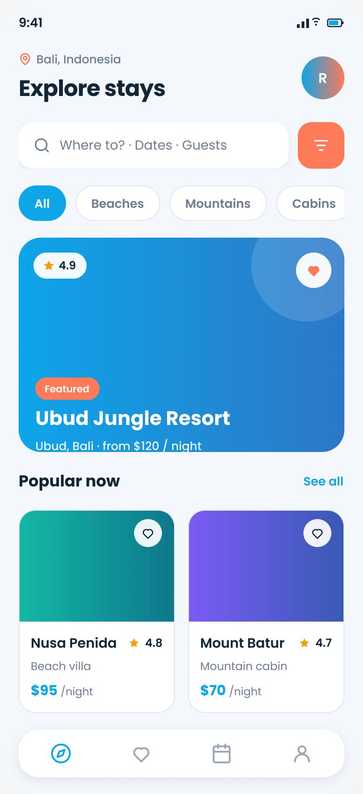
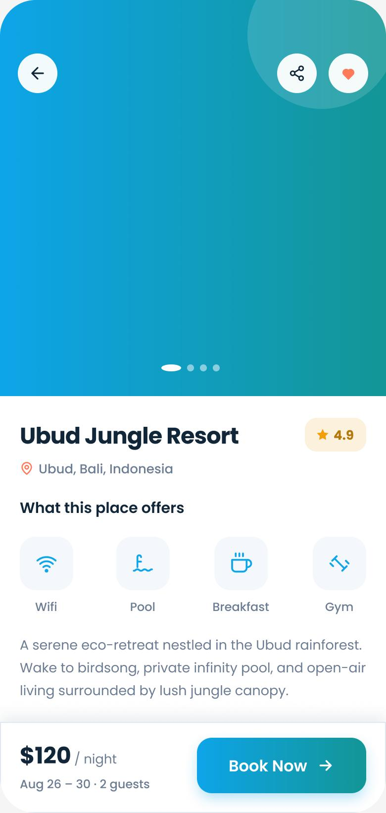

The Problem
Booking a trip should feel exciting — instead it's exhausting. Endless listings, uninspiring grids, and prices that jump at checkout push travelers to open ten tabs, compare endlessly, and abandon the booking entirely.
How might we help travelers discover stays they'll love and book them confidently — without decision fatigue or price surprises?
Goals & Success Metrics
- ✦Inspire, then filterLead with curated, visual discovery — not a spreadsheet of rooms.
- ✓Build trust on the detail pagePhotos, ratings, amenities and an honest total price.
- ⚡Fast, transparent bookingA sticky book bar with the real per-night price.
Target metrics: stay findability > 85% · booking completion > 90% · SUS > 80 · price-clarity rating ↑.
User Research
Key findings
- 1Inspiration comes before criteriaPeople browse to dream first, then narrow — discovery must feel visual and curated.
- 2Photos + ratings win trustReal imagery and review counts are the biggest confidence drivers on the detail page.
- 3Amenities decide tiesWi-Fi, pool, breakfast — the deciding details when comparing two stays.
- 4Hidden fees destroy trustA price that changes at checkout is the fastest way to lose the booking.
Personas
Nisha Verma
"I decide to travel on a Thursday for the weekend. I want inspiration and a fast, honest booking."
- Discover great stays quickly
- Book in minutes on mobile
- Overwhelming, samey listings
- Prices that change at checkout
Tom & Cara
"We compare a lot before we commit — show us amenities and the real total so we can just decide."
- Compare amenities & ratings easily
- See the honest total up front
- Fee surprises & unclear inclusions
- Long, fiddly booking forms
User Flow — Discover & Book
Wireframes
Low-fi prioritised a visual, curated Explore feed and a detail page that answers doubts above the sticky book bar.
Hi-Fi Design & Prototype
Discovery leads with a bold featured card and category chips; the detail page builds trust with a photo gallery, ratings and an amenities grid — with an honest per-night total pinned to a sticky Book bar.


Key design decisions
- ◆Featured hero + chipsInspiration first; filtering is one tap away, not the whole screen.
- ◆Amenities gridScannable icons answer the deciding “does it have…?” questions instantly.
- ◆Transparent sticky book barThe real price/night stays visible so there's no surprise at checkout.
Usability Testing
6 participants, unmoderated (Maze) + follow-up interviews.
Tasks: (1) “Find a highly-rated beach stay.” (2) “Book it for 2 guests.”
| Metric | Target | Result |
|---|---|---|
| Stay findability | > 85% | 91% |
| Booking completion | > 90% | 94% |
| System Usability Scale | > 80 | 85 |
| Price-clarity rating (1–5) | ↑ | 4.6 |
What testing changed
Users wanted the total before committing to the booking screen. → Surfaced the per-night price on the sticky bar earlier in the flow.
Date & guest selection was easy to miss. → Combined “Dates · Guests” into the search summary and made it a clear, tappable field.
Results & Impact
Reflection & Next Steps
Leading with emotion and imagery — then letting filters follow — matched how people actually plan trips. And nothing built trust like an honest price shown early; transparency was a UX feature, not just a policy.
Next: saved wishlists & trip boards, map-based discovery, and flexible-date price views for spontaneous travelers like Nisha.